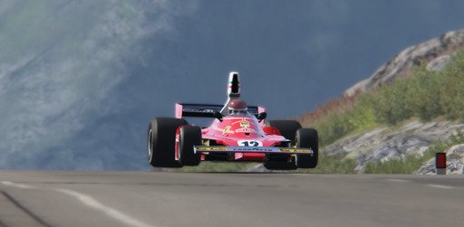

Mijn ervaring
Mijn gaminggeschiedenis
Ik ben 12 jaar geleden begonnen met gamen. Ik begon met gamen op de PlayStation. Na vijf jaar op de PlayStation gespeeld te hebben, ben ik overgestapt naar de computer, waar ik nu al zeven jaar op game. Een paar jaar geleden was gamen een heel groot ding voor mij, vooral in de coronaperiode. In die tijd ben ik semi-professioneel gaan gamen.
Welke genre ik het meest speel
De genres die ik het meest speel, zijn simulatie- en racegames. Dit komt omdat ik het leuk vind om tegen andere mensen te racen, waardoor de competitie veel hoger is dan wanneer je alleen tegen AI zou spelen. Je krijgt meteen een beetje het gevoel alsof je er echt in zit, vooral als je een VR-headset gebruikt, of bijvoorbeeld een simulatiestuurwiel of flightstick.
